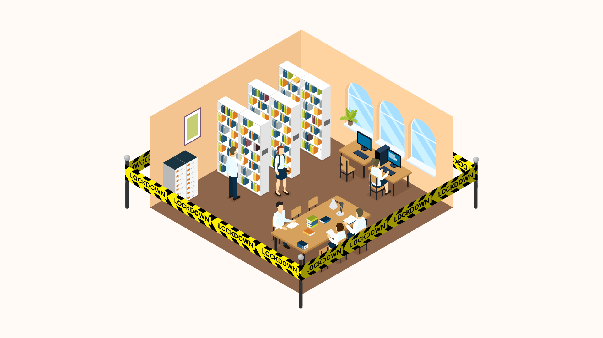
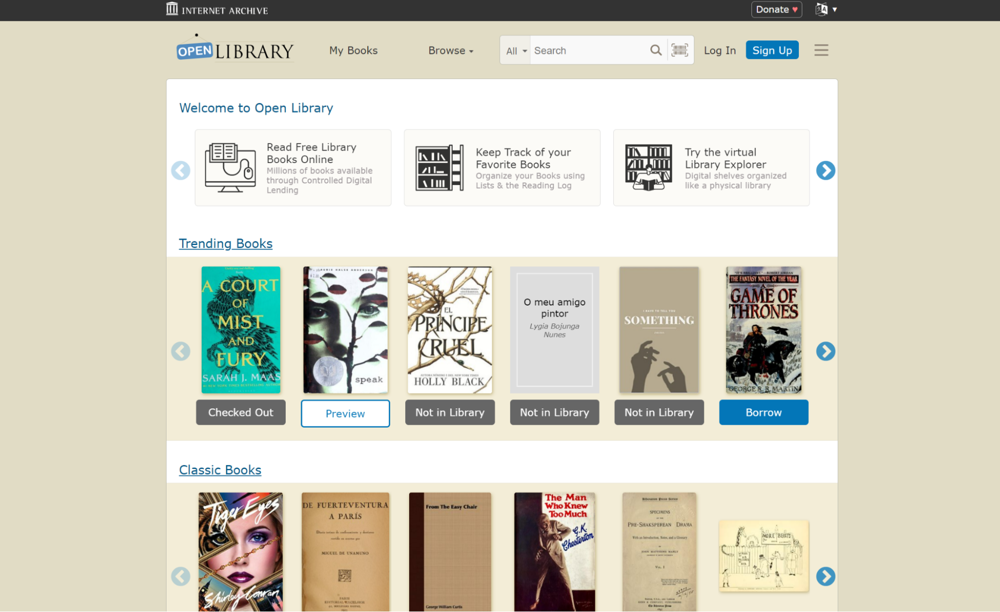
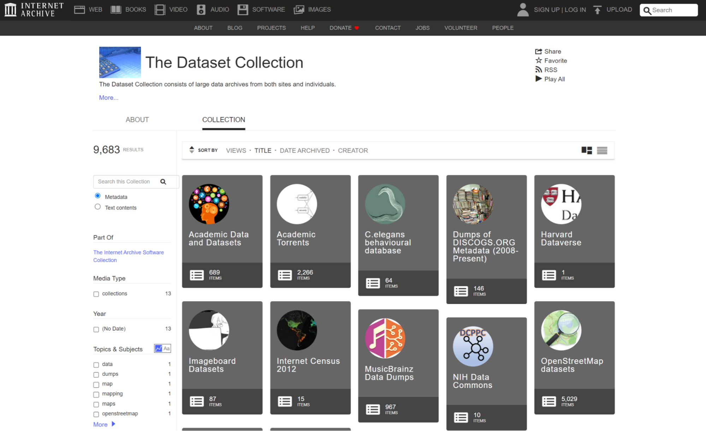

Hachette v. Internet Archive and the Future of Data Access
This article was first published in Nightingale on May 16, 2023.
Humanity has long cherished the pursuit and dissemination of knowledge. Dating back to the third century with the Library of Alexandria, generations of libraries sought to replicate, serving as a safehaven of wisdom for the intellectually curious.
Although the digital age has changed how we look for and access information, our enthusiasm for the free exchange of ideas has not diminished. The recent ruling in the Hachette v. Internet Archive case raises important issues regarding the function of fair use in the preservation of knowledge, the changing nature of libraries in the digital environment, and the precarious balance between the rights of creators and the general desire for open access.
Judge John G. Koeltl of the Southern District of New York decided in a historic judgment on March 27, 2023, that the Internet Archive’s “Open Library” lending program violates copyright. This decision calls into question the rights of archivists and the accessibility of open data.
Professionals in the field of data visualization are familiar with the advantages of free and open access to knowledge. The ability to gather, examine, and display data from a variety of sources is essential to our work. The transformation of raw data into captivating visual storytelling has a huge potential to advance understanding, influence policy, and guide judgment.
The Hachette v. Internet Archive decision will have a big impact on our industry and how people access information going forward. This ruling may unintentionally impede the search for knowledge, inhibit creativity, and restrict the innovation which underpins our sector by reducing the extent of fair use and possibly limiting the digital access of copyrighted works. More than ever, data visualization experts must fight for a fair and balanced copyright system which respects the rights of content creators while also recognizing the critical role of open access.
What is the Internet Archive?
The Internet Archive is a non-profit whose mission is to preserve and make digital content. Since its inception in 1996, the Internet Archive has amassed a vast collection of freely accessible digital books, audio, films, websites, and other digital materials. The Internet Archive also operates the well-known “Wayback Machine,” a service which enables users to access archived versions of previously existing websites. The Internet Archive’s mission is to provide universal access to all knowledge. Its efforts have made it an indispensable resource for researchers, educators, and anyone else seeking current and archived digital materials.
The “Open Library” of the Internet Archive provided access to millions of books and documents which would have otherwise been difficult or impossible to find. During the COVID-19 pandemic shutdowns, when many physical libraries were forced to close and people resorted to digital resources to continue their studies and research, it became an indispensable resource. Even though digital lending through these libraries was beneficial, it was not always sufficient to meet the skyrocketing demand for remote resource access. Numerous libraries were constrained by limited budgets, a limited selection of digital titles, and strict licensing agreements which dictated the number of copies and lending limits for digital materials. Together with the increased reliance on remote learning and remote employment, these factors underscored the need for accessible alternative information sources.
Through its “Open Library” lending program, the Internet Archive intended to offer a more extensive digital collection. The Internet Archive, unlike conventional libraries, did not always adhere to the same rules and regulations regarding the acquisition and lending of digital materials. Hachette v. Internet Archive hinged on the argument that the Internet Archive’s lending program violated copyright law by neglecting to obtain the required permissions and licenses for its digital reproductions, circumventing the established rules governing library lending. While libraries are permitted to have digital copies of books and lend them within a prescribed framework, the Internet Archive’s approach was deemed to be in violation of fair use, resulting in an unfavorable ruling. For data visualization professionals, researchers, academics and other open access advocated, this raises significant concerns about the future of open access to information.
The “Open Library” of the Internet Archive has been a helpful resource for both readers and academics, providing access to millions of books and documents that would otherwise be difficult or impossible to locate. Credit: William Careri
Questions of fair use and copyright
The lawsuit, brought by Hachette Book Group and several major publishers, including HarperCollins, Penguin Random House and Wiley, was filed in 2019. The plaintiffs alleged that the Internet Archive’s “Open Library” lending program effectively functioned as a pirate website, enabling users to access and distribute copyrighted materials without authorization or payment.
But in its defense, the Internet Archive countered that their “Open Library” lending service was protected by the doctrine of fair use, which permits the limited use of copyrighted content without authorization in certain circumstances, such as for educational or research purposes. The Internet Archive argued that their service was comparable to a standard library lending system, in which users could borrow digital copies of books for a limited time and it did not profit from the circulation of copyrighted material. The Open Library ensured that only a limited number of users could access a particular digital book at any given time. The number of available copies corresponded to the number of physical copies held by partner libraries or obtained through other means. This is done to simulate the scarcity of physical copies and ensure that the digital lending is within reasonable bounds, and was only available for those who created an Open Library account. The Internet Archive also maintained its efforts to preserve and distribute digital content were in the public interest and consistent with its mission to provide universal access to knowledge.
Although the ruling against the Internet Archive sets a new precedent regarding fair use and open access to information, it is by no means the first.
Other landmark cases
The cases of Sony Corp. of America v. Universal City Studios, Inc. (1984) and Authors Guild v. Google, Inc. (2013) are landmarks in the history of fair use and information access. Both cases illustrate the role of technological innovation in influencing the contours of copyright law and serve as useful touchstones for comprehending the implications of the Hachette v. Internet Archive decision.
The Sony case, also known as the “Betamax case,” involved the private, noncommercial recording of copyrighted television programs. The Supreme Court’s ruling established fair use in this context, setting a precedent for future cases involving new technologies. Similar to the digital lending program of the Internet Archive, Sony’s Betamax technology facilitated access to copyrighted content. However, the Hachette v. Internet Archive case differs from the Betamax case in that the court ruled the Internet Archive’s lending program violated fair use.
In the 2013 case Authors Guild v. Google, Inc., the court ruled that Google’s book digitization project, which aimed to create a searchable database of books, qualified as fair use because it was deemed transformative and provided valuable information without duplicating the original works. To achieve this, Google implemented a system where they only displayed snippets of information in the search results rather than full works. This decision highlighted the significance of information accessibility and the transformative nature of digitization projects, drawing parallels to Internet Archive’s efforts. In contrast, the decision in Hachette v. Internet Archive suggests that the boundaries of fair use may be narrower when it comes to digital lending programs as opposed to searchable databases.
These landmark cases illustrate the complexities and nuances of fair use and information access, as well as the role that technology plays in challenging and redefining established legal frameworks. As the Hachette v. Internet Archive decision unfolds, it is crucial to consider its ramifications in the context of copyright law’s evolution and the ever-changing landscape of information access.
Potential implications
The recent decision in Hachette v. Internet Archive has cast doubt on the future availability of information. This decision establishes a precedent for the use of copyrighted materials in digital libraries, leaving many to speculate on the future of similar archival endeavors.
Although the decision specifically targeted the “Open Library” lending program, it inevitably raises questions regarding the broader implications for archival efforts and digital content accessibility. If similar projects are deemed to be in violation of copyright laws, researchers’ ability to freely access and disseminate information could be severely restricted, potentially impeding scientific progress and innovation.
In a hypothetical future marked by increased restrictions on open access to information, the data visualization community and other groups that value open access may face significant obstacles that impede their ability to create compelling and informative visual narratives.
With limited access to a wide variety of sources, the insights and conclusions derived from data analysis may become more limited, resulting in a less comprehensive understanding of complex issues. In addition, the sharing and collaboration that underpin the collective development of the data visualization community could be stifled, resulting in a slower rate of innovation and progress. Such a future could also exacerbate existing disparities in knowledge access, creating a digital divide that marginalizes underrepresented voices further and perpetuates systemic inequalities.
In the end, a world with restricted access to information would not only limit the data visualization community, but also impede the societal pursuit of knowledge and comprehension that drives human advancement.
As data visualization professionals work with complex and large datasets, they rely heavily on accessible information and resources to produce visualizations that can drive insights and decision-making. Credit: William Careri
What happens next
Following the ruling, Internet Archive announced their plans to appeal the court’s decision.
In a statement made by Internet Archive Founder Brewster Kahle, “Libraries are more than the customer service departments for corporate database products. For democracy to thrive at global scale, libraries must be able to sustain their historic role in society—owning, preserving and lending books. This ruling is a blow for libraries, readers and authors and we plan to appeal it.”
At the time of writing this article, efforts were made to contact the Internet Archive for additional information, with no returning correspondence made.
The Hachette v. Internet Archive ruling serves as a critical juncture in the ongoing discourse surrounding copyright law, fair use, and the preservation of knowledge in the digital age. As data visualization professionals, you are uniquely positioned to witness firsthand the transformative power of open access to information.
The decision in Hachette v. Internet Archive is a turning point in the ongoing conversation about copyright law, fair use and the preservation of knowledge in the digital age. As professionals in data visualization, you are in a unique position to witness the transformative power of open access to information firsthand.
It is essential to engage in this discussion and advocate for a balanced approach that respects the rights of creators while fostering the free movement of ideas upon which our society depends. The spirit of the Library of Alexandria must endure in our collective pursuit of knowledge and innovation, inspiring us to create a future in which information is accessible and the fruits of human intellect are shared for the benefit of all.